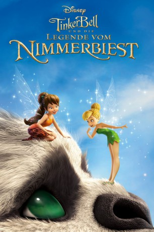

Alternativ: Tinker Bell and the Legend of the NeverBeast (Englischer Titel)
 
 IMDB-Wertung: 7.3 / 10
IMDB-Wertung: 7.3 / 10  Metascore:
Metascore: 
Die lustige und clevere Tierfee Fawn glaubt, dass man ein Buch nicht anhand seinem Titel beurteilen sollte – oder ein Tier aufgrund seiner Klauen. Und so freundet sie sich mit einer mysteriösen Kreatur an, dem Nimmerbiest. Tinkerbell und ihre Freunde sind sich aber nicht so sicher, ob dieses Wesen wirklich harmlos ist, und so machen sie sich auf, das Monster zu fangen, bevor es ihre Heimat zerstört. Fawn aber hört auf ihr Herz und versucht, das Nimmerbiest zu retten.
Jahr: 2014
Dauer: 73 Minuten
FSK: 0
Land: USA Studio: Walt Disney Studios Home EntertainmentTonspuren: DD5.1 - ,
Untertitel:
Auflösung: 1080p (1920x1080) Größe: 3768 MB
Genre: Abenteuer, Fantasy, Animation/Trick, Familie
Regisseur: Steve Loter
Drehbuch: Steve Loter, Tom Rogers, Tom Rogers, Robert Schooley, Mark McCorkle
Soundtrack: Joel McNeely
Darsteller:
 Ginnifer Goodwin als Fawn
Ginnifer Goodwin als Fawn Mae Whitman als Tinker Bell
Mae Whitman als Tinker Bell Rosario Dawson als Nyx
Rosario Dawson als Nyx Lucy Liu als Silvermist
Lucy Liu als Silvermist Raven-Symoné als Iridessa
Raven-Symoné als Iridessa Megan Hilty als Rosetta
Megan Hilty als Rosetta Pamela Adlon als Vidia
Pamela Adlon als Vidia Danai Gurira als Fury
Danai Gurira als Fury Thomas Lennon als Scribble
Thomas Lennon als Scribble Olivia Holt als Morgan
Olivia Holt als Morgan Grey Griffin als Narrator
Grey Griffin als Narrator Kari Wahlgren als Robin
Kari Wahlgren als Robin Anjelica Huston als Queen Clarion
Anjelica Huston als Queen Clarion Melissa Goodwin Shepherd als Garden Fairy #1
Melissa Goodwin Shepherd als Garden Fairy #1Datei: X:\Kinder Disney HD\Tinkerbell\TinkerBell 6 - und die Legende vom Nimmerbiest (2014, FSK0, 1920x1080) 3D.mkv seit 29.01.2019
Festplatte: Kinder-Filme+Trick
 Es gibt insgesamt 11 Filme in der Gruppe 'Kinder Disney HD\Tinkerbell'
Es gibt insgesamt 11 Filme in der Gruppe 'Kinder Disney HD\Tinkerbell'